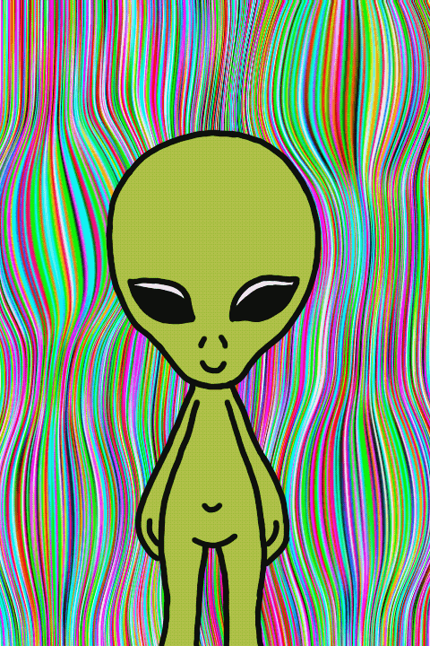
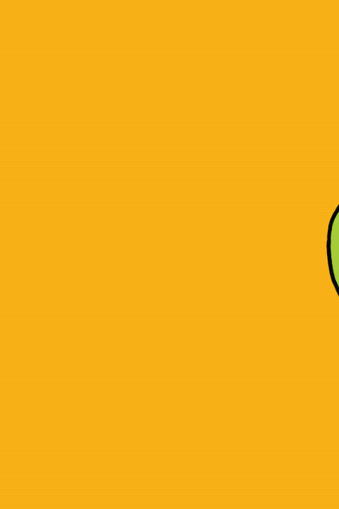

‹
›
The gifs were made in the Animation chair. They're about an alien who has human attitudes. It was
intended to use video frames to capture the movements. The themes were food, dancing and
greeting.
For the construction, Premier and Procreat programs were used.
Food
Dancing

Hey

Thank you very much for your time. Please contact me to discuss more about design!